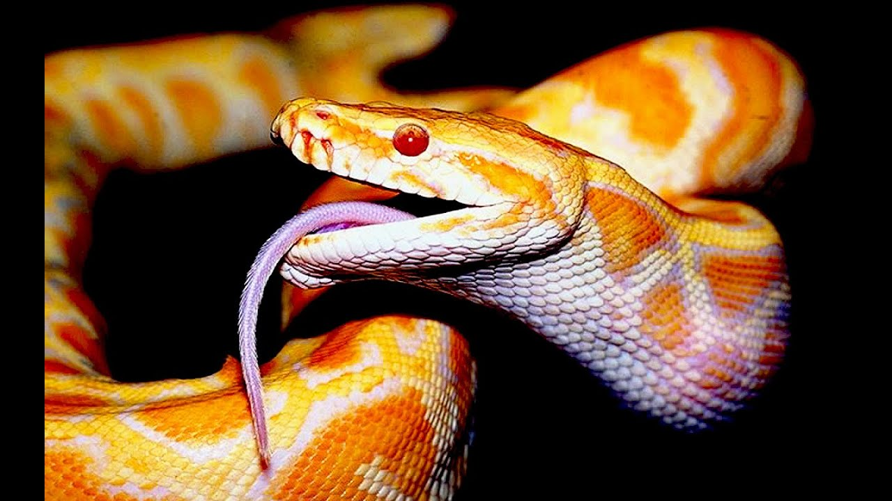

Змеи – довольно распространенный вид пресмыкающихся, проживающий практически на всей Земле. В природе, вне зависимости от условий, есть высокая вероятность повстречать животное. Исключениями являются лишь Антарктида, Новая Зеландия и Ирландия. Хладнокровные обладают множеством особенностей, которые уже успел изучить человек. На данный момент известно более 3630 видов змей.
Спросите у ЯндексаЭволюция змей связана с исчезновением гена SHH в тех местах тела, откуда формируются конечности. Поэтому постепенно у некоторых ящериц в последующих поколениях перестали образовываться лапы, и появились новые виды хладнокровных.

Картинка с абсолютной ссылкой
Картинка с относительной ссылкой